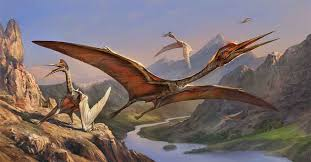
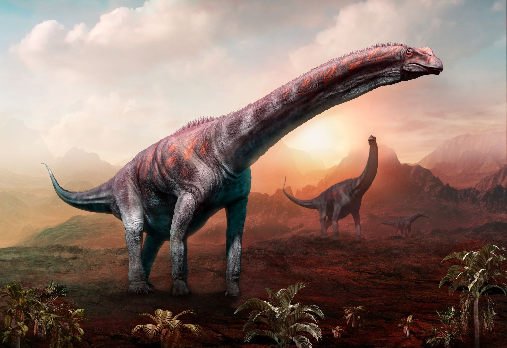

The Cretaceous period hosted some more amazing well known dinosours. While the Tyranosaurous Rex to the Quetzalcoatlus, this period pushed the limits of what could survive on our planet, or in the Quetzalcoatlus's case, what can fly.
What is not to know about this beast. Everyone knows what the Tyranosaurous Rex is. The "final form" of the therapods, starting all the way from the Eoraptor, this beast terrorized the Cretaceous Period. One of these creatures could take down entire packs of smaller dinosaurs, and was virtually unstoppable, accept if it was lured into the water, where is was much less menacing.

The Quetzalcoatlus was the heaviest and largest animal in history to ever become airborne. With a wingspan of up to 36 feet, and a weight of up to 550lbs, this creature should have never been able to even get off the ground, but it was build with extremely hollow bones, which let it get off the ground. This beast was carnivorus, and would typically eat smaller creatures, fish, and other airborne creatures(all were smaller than the Quetzalcoatlus). The reason this creature did not terrorize other dinosaurs though, is that it liked to stay extremely high up in the air, only coming down to eat.
When I said the Brachiosaurus was not the largest creature ever to walk on land, it fails to beat the Argentinosaurus. This beast was like the Brachiosaurus on steriods. It was up to 110 feet long, and weighed up to 220000 pounds. This beast was the largest creature ever to set foot on our planet. Even most therapods would not take this guy on, and even worse, they traveled in packs of up to 20. This meant you could run into 20 massive animals the size of a skyscraper. The only creature at this time period that would hunt these creatures was the tyranosaurus Rex.
